Nodes that direct the flow of execution in a Blueprint graph — deciding which path runs, how many times, or in what order. These are the structural bones of any Blueprint.
Standalone Pages
These nodes are complex enough to warrant their own pages:
- Branch — if/else. Routes to True or False based on a boolean.
- Sequence — fan-out. Fires multiple exec outputs in guaranteed order from a single input.
- For Each Loop — array iteration. Executes the loop body once per array element.
- Switch — multi-way routing. Sends execution down one of several paths based on a data value (Int, String, Name, or Enum).
- Gate — open/close valve. Blocks or allows a stream of execution pulses. Controlled by separate Open, Close, and Toggle inputs.
- MultiGate — sequential/random distributor. Routes each pulse to the next output in a sequence (or randomly). Can loop or stop after all outputs fire once.
Flip Flop
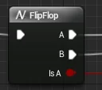
Alternates between two execution outputs on each call. First call fires A, second fires B, third fires A, and so on. The Is A boolean output tells you which side just fired.
Pins
| Pin | Direction | Type | Description |
|---|---|---|---|
| (Unlabeled) | Input | Exec | Triggers the toggle |
| A | Output | Exec | Fires on odd calls (1st, 3rd, 5th…) |
| B | Output | Exec | Fires on even calls (2nd, 4th, 6th…) |
| Is A | Output | Bool | True when A fires, false when B fires |
When to Use
- Toggle behaviors: open/close, show/hide, enable/disable
- Any two-state interaction where one input should alternate between two outcomes
Pattern: Read/Close Toggle
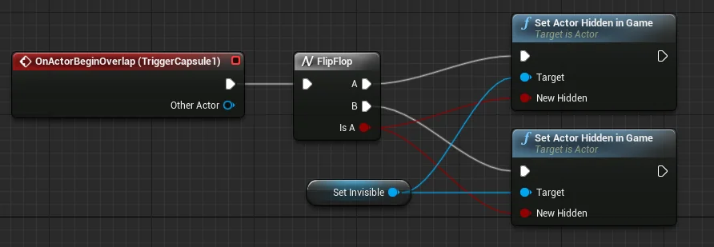
Tutorial 801’s readable item system: the player presses E to read a note. A fires — the widget appears, input is disabled. Press E again — B fires, the widget is removed, input is restored. One node replaces a boolean variable + Branch + Set combination.
Do Once
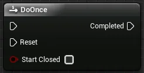
Fires its output exactly once. All subsequent calls are ignored until the Reset input is pulsed, which re-arms the node for one more firing.
Pins
| Pin | Direction | Type | Description |
|---|---|---|---|
| (Unlabeled) | Input | Exec | The trigger. Only passes through on the first call. |
| Reset | Input | Exec | Re-arms the node so it can fire once more. |
| Completed | Output | Exec | Fires on the first call (and once after each Reset). |
When to Use
- One-time events: a cutscene that plays once, a door that opens permanently, a pickup that can only be collected once
- Any trigger that should fire once but might need re-arming later (unlike a boolean gate, DoOnce handles the state internally)
Pattern: Resettable One-Shot
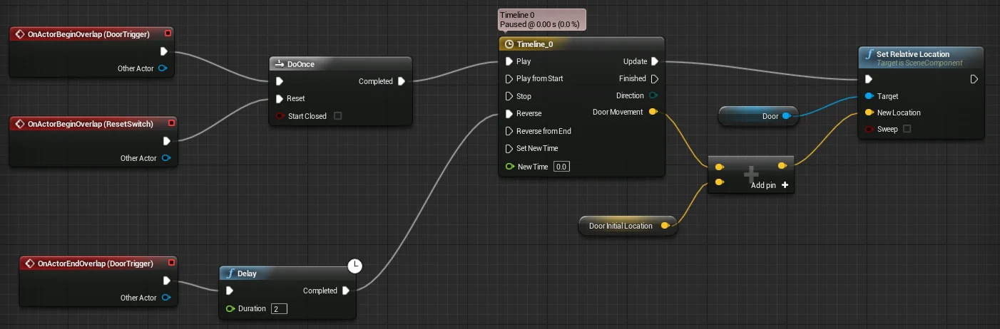
A door opens the first time the player touches a trigger. Further touches do nothing. But a separate “reset” trigger (a lever, a key pickup, a timer) wires into Reset, and the door can be opened once more.
DoOnce vs. Branch + Boolean Gate
Branch with a HasTriggered boolean (Tutorial 104 pattern) does the same thing as DoOnce — but requires you to create the variable, set it, and check it. DoOnce is one node. Use DoOnce when you don’t need to read the triggered state elsewhere; use the boolean pattern when other parts of the Blueprint need to know whether the event has fired.
Do N
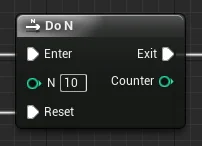
Fires its output N times, then stops. Like DoOnce but with a configurable limit. Has a Reset input to restart the counter.
Pins
| Pin | Direction | Type | Description |
|---|---|---|---|
| Enter | Input | Exec | The trigger. Passes through up to N times. |
| N | Input | Int | How many times to allow before stopping. |
| Reset | Input | Exec | Resets the counter back to 0 so it can fire N more times. |
| Exit | Output | Exec | Fires each time Enter is called, up to the Nth call. |
When to Use
- Limited-use items: a flashlight with 5 uses, a gun with limited ammo before reloading
- Tutorial prompts that appear the first 3 times a player does something, then stop
Pattern: Refuel to Reset
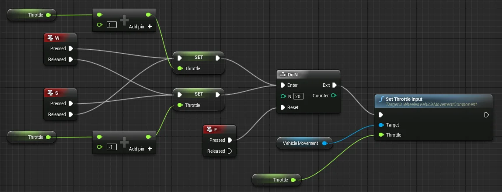
A vehicle can start 20 times. After that, Enter pulses are ignored. A refueling event wires into Reset — the vehicle can start 20 more times.
For Loop
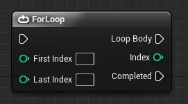
A counter-based loop that fires Loop Body once for each integer from First Index to Last Index (inclusive). The current counter value is available on the Index output. After all iterations complete, Completed fires.
Pins
| Pin | Direction | Type | Description |
|---|---|---|---|
| (Unlabeled) | Input | Exec | Starts the loop |
| First Index | Input | Int | Starting counter value |
| Last Index | Input | Int | Ending counter value (inclusive) |
| Loop Body | Output | Exec | Fires once per iteration |
| Index | Output | Int | Current counter value |
| Completed | Output | Exec | Fires once after the last iteration |
When to Use
- You need to run something a specific number of times (spawn 5 enemies, check 10 slots)
- You need the iteration counter as data (e.g., spacing items along a line by index × offset)
- You don’t have an array — if you have an array, use For Each Loop instead
For Loop vs. For Each Loop
ForLoop counts integers. For Each Loop iterates array elements. If you’re processing items in an array, For Each Loop is the right choice — it gives you the element directly. If you just need to repeat something N times or need the index as a value, ForLoop is simpler.
ForLoopWithBreak Variant
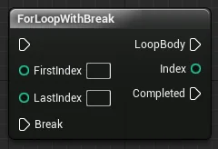
Same as ForLoop but adds a Break exec input. When fired (typically from a Branch inside the loop body), the loop stops immediately and Completed fires.
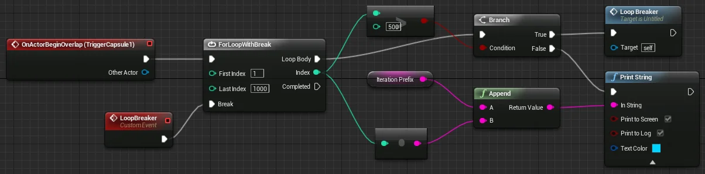
Use when you’re searching for something and want to stop as soon as you find it, or when a condition inside the loop should abort early.
Performance note: Loop iterations happen between frames. Large loops (hundreds or thousands of iterations) can cause frame hitches. For very large iteration counts, consider spreading work across multiple frames with a timer.
While Loop
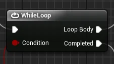
Evaluates a Condition before each iteration. If true, executes the Loop Body and re-checks. If false, exits to Completed. This is the Blueprint equivalent of a while loop in code.
Pins
| Pin | Direction | Type | Description |
|---|---|---|---|
| (Unlabeled) | Input | Exec | Starts the loop |
| Condition | Input | Bool | Checked before each iteration. Loop continues while true. |
| Loop Body | Output | Exec | Fires each iteration |
| Completed | Output | Exec | Fires when Condition becomes false |
When to Use
- The number of iterations isn’t known ahead of time — you loop until a condition changes
- Searching through data structures where the size varies
- Processing a queue until it’s empty
Pattern: Counter-Based While Loop
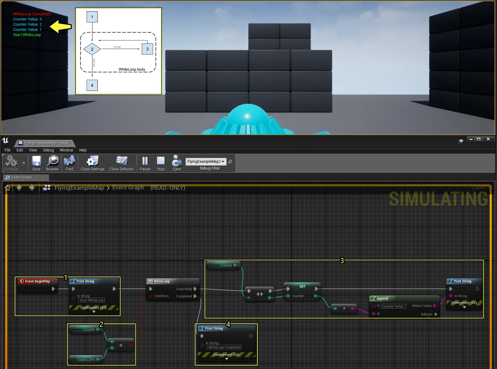
A counter starts at 0. The condition checks Counter < Count Limit. Each iteration increments the counter and prints its value. When the counter reaches the limit, the loop exits and prints “WhileLoop Completed.”
Infinite Loop Warning
A WhileLoop that never makes its condition false will freeze the editor. Before using one, answer three questions:
- What makes the condition become false?
- Is the condition initialized correctly before the loop starts?
- Does something inside the loop body actually change the condition each cycle?
If you can’t answer all three, use a ForLoop with a known limit instead.
All Flow Control Nodes at a Glance
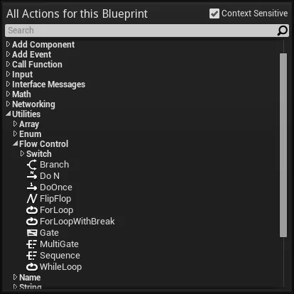
Source
- Flow Control | UE 4.27 — full page, clipped 2026-04-12
- Individual pages above — see each for additional sources